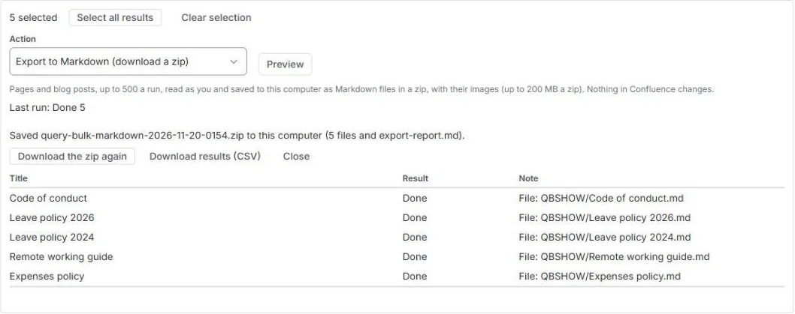

How to export Confluence pages to Markdown (with images)
Confluence Cloud can't export to Markdown. A single page exports to Word or PDF, and a whole space to PDF, CSV, HTML or XML. The closest route without an app is a space's HTML export run through a converter such as pandoc, which leaves clean-up to do. To export just the pages you need, by label, space or any search, as Markdown files with their images, use an app.
What Confluence exports on its own
| What | Formats | Who can do it |
|---|---|---|
| One page or blog post (••• → Export) | Word, PDF | Anyone who can view it |
| A space, or pages picked from it (Space settings → General → Export space) | PDF, CSV; HTML and XML under Advanced options (Atlassian is ending XML on 1 December 2026) | Space admins |
None of these is Markdown. For Markdown, the HTML space export is the usual starting point, because HTML converts to Markdown reasonably well.
From an HTML space export, with pandoc
- In the space, open ••• next to the space name and choose Space settings. In the menu on the left, expand General and choose Export space.
- Under File format, open Advanced options, choose HTML and press Next.
- Choose Export each item, with attachments for the whole space, or Select what to export to tick pages in the page tree (Deselect All clears it first; ticking a page doesn't tick its parent). Atlassian suggests 2,000 pages or fewer per export. Press Export, and when it reaches 100%, download the zip and unzip it.
- Install pandoc (free), open a terminal in the space's folder inside the unzipped export (it's named after the space key) and convert each page. In PowerShell:
On macOS or Linux:Get-ChildItem *.html | ForEach-Object { pandoc -f html -t gfm-raw_html --wrap=none $_.FullName -o ($_.BaseName + '.md') }for f in *.html; do pandoc -f html -t gfm-raw_html --wrap=none "$f" -o "${f%.html}.md"; donegfm-raw_htmlgives GitHub-style Markdown without the leftover HTML wrappers. Without it, every page keeps Confluence's<div>layout in the file.
Where it falls short
- Space admins only, and one space at a time. You pick pages by ticking them in the page tree, not by label or search.
- Blog posts aren't exported. Comments are left out unless you choose Select what to export and keep Include comments ticked.
- Each file carries Confluence's page furniture: a breadcrumb link, “Space : Title”, “Created by … on …” at the top and “Document generated by Confluence” at the bottom. There's no header with the page's labels or address.
- Panels become plain text (a panel's title becomes bold text), so you can't see where a warning or tip was. Nothing lists what changed.
- Links to other pages go back to Confluence, so the files still depend on it.
- Images are named by attachment id, such as
attachments/20316225/20283415.png, not by their file names, so they need renaming if the Markdown goes anywhere else.
For one or two short pages, copying the page and pasting it into a Markdown editor keeps headings, bold, italic, lists and links, but drops images, panels and most tables.
By search, label or space with Query & Bulk Actions
- A Confluence admin installs Query & Bulk Actions. Anyone on the site can then use it; they don't need to be a space admin.
- Open the app from the Apps menu and find the pages with a search: a label (
label = "handbook"), a space, pages under a parent page, pages nobody has changed in a year, or a saved search. Plain English works too. - Tick the results or press Select all, choose Export to Markdown (download a zip) and press Preview. It says how many pages and blog posts will be exported.
- Press Export. The zip is saved to your computer: one folder per space, one
.mdfile per page with a short header (title, space, address, labels, last change), the images in animagesfolder linked from the pages, andexport-report.mdlisting anything that didn't convert.

- Links between exported pages point to their
.mdfiles, also across space folders. Other links go to the page in Confluence. - Panels become callouts (
> [!NOTE],> [!WARNING]and so on, which GitHub and Obsidian show as callouts), code blocks keep their language, task lists become- [ ], and tables with merged cells stay as HTML tables so nothing is lost. - Nothing disappears silently. A macro the exporter can't convert, such as a table of contents or another app's macro, stays in the file as a comment and is listed in the report.
- Up to 500 pages a zip, then Export the next 500 carries on without repeating pages. Up to 200 MB of images go in each zip.
- It runs in your browser, as you. You only export pages you can open, and the pages go straight from Confluence to your computer. The app keeps no copy.
Disclosure: Kitefold makes Query & Bulk Actions, so we're not neutral. Confluence's HTML export and pandoc are free, and may be all you need for a one-off export of a whole space.
Related guides
- Confluence clean-up searches with CQL, and what CQL can’t find
- How to find orphan pages in Confluence
- How to find unused attachments in Confluence (and free up storage)
Checked against Confluence Cloud in November 2026, with a real HTML export converted by pandoc 3. Sources: Atlassian's Export a space's content as Word, PDF, or data files. Confluence changes often; if something here no longer matches what you see, email support@kitefold.app and we'll update it.